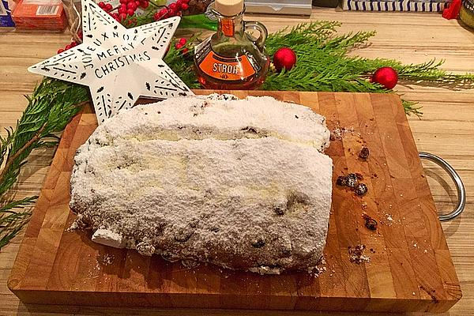

Sächsischer Weihnachtsstollen

reicht für 2 Stollen
Zutaten für 1 Portion
- 1 kg Mehl
- 120 g Hefe
- 200 ml Milch
- 200g Zucker
- 15g Salz
- 2 Pckg. Vanillinzucker
- 400 g Butter
- 80 g Schweineschmalz
- 100 g Zitronat
- 150 g Mandeln fein gehackt
- 45 g Bittermandeln fein gehackt
- 650 g Rosinen
- 10 cl Rum
- 2 g Muskat
- 4 g Ingwerpulver
- 2 g Nelken
- 3 g Kardamom
- 1 Zitrone, davon die abgeriebene Schale
- 120 g Butter, ausgeassene, zum Bestreichen
- Butter für das Blech
- n.B. Zucker zum Bestreuen
- n.B. Puderzucker zum Bestreuen
Nährwerte pro Portion
| kcal |
Eiweiß |
Fett |
Kohlenhydrate |
| 13223 |
215.49 g |
660.54 g |
1512.49 g |
Zubereitung
Am Vorabend ausgelesene, gewaschene und kurz abgetrocknete Rosinen mit Rum tränken und über Nacht ziehen lassen, übrige Zutaten in Küche bereitstellen.
Am Backtag gesamtes Mehl in eine große Schüssel füllen. In die Mitte in kleine Mulde drücken und aus Mehl, Hefe und etwas handwarmer Milch einen Vorteig anrühren. Diesen ca. 30 Min. abgedeckt und zugfrei gehen lassen.
...
Zum Anfang
Zutaten
Nährwerte
Zubereitung